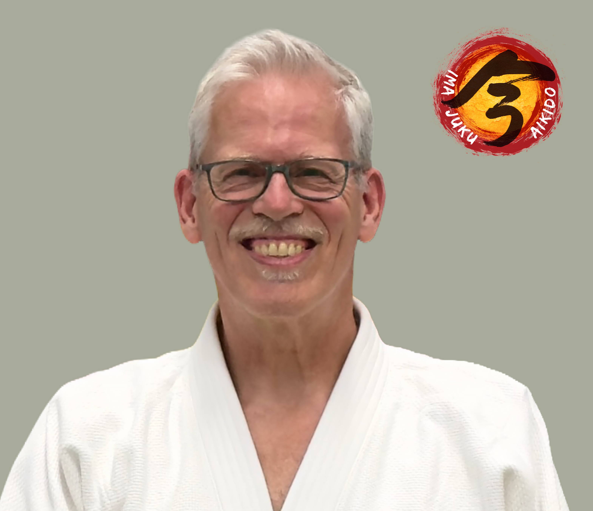

Trainen in Zeist
- Maandag van 19:45 tot 21:30 uur
- Gymzaal Noordweg, Noordweg 10, Zeist
- Zaal open vanaf 19:15
- Voor volwassenen vanaf 18 jaar
Bij Ima Juku train je Aikido in Zeist in de volwassenengroep vanaf 18 jaar.

Aikido is fysiek, maar het gaat niet om harder zijn dan de ander. Je leert contact maken, je houding bewaren en ontspannen bewegen wanneer er druk ontstaat.
Je werkt met verschillende partners en ontdekt hoe techniek ontstaat uit timing, richting en balans. De training is serieus, rustig en zonder wedstrijdcultuur.
Je hoeft niets te kunnen voordat je begint; je komt juist om het te leren.
Nee. Beginners zijn welkom. Je hoeft niets te bewijzen en je krijgt begeleiding op de mat.
Een trainingsbroek zonder ritsen of een legging met een T-shirt is prima. Je traint zonder schoenen of sokken op de mat.
Dat kan. Toch raden we meestal aan om mee te doen, omdat je Aikido vooral ervaart door te bewegen.
Geef een blessure altijd vooraf of bij binnenkomst aan. We denken graag mee en je traint binnen je eigen grenzen. Bij twijfel is overleg met arts of fysiotherapeut verstandig.
Ima Juku is een dojo voor volwassenen vanaf 18 jaar.
Op donderdagavond trainen we ook in Baarn. Dezelfde dojo, een andere locatie.
Bekijk de Baarn-pagina